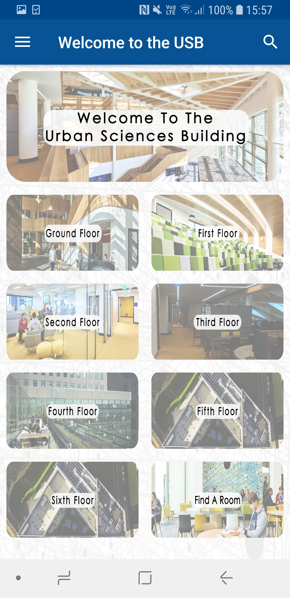
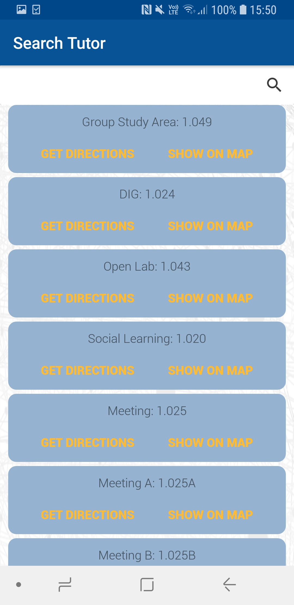
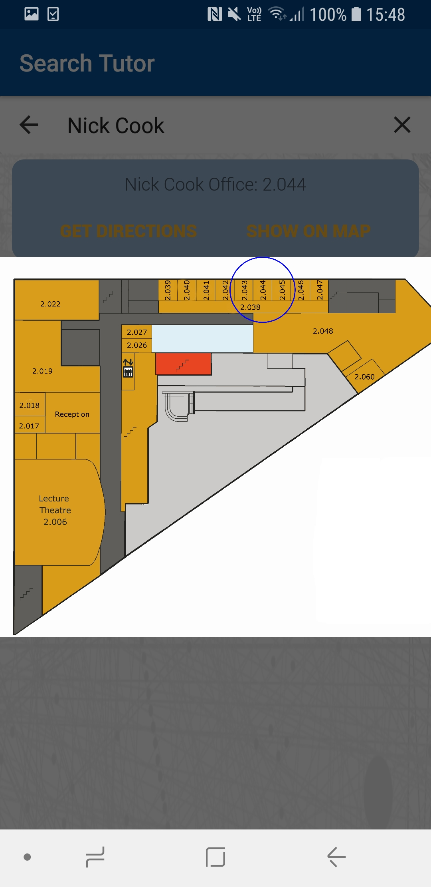
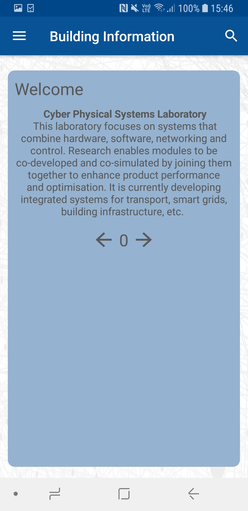
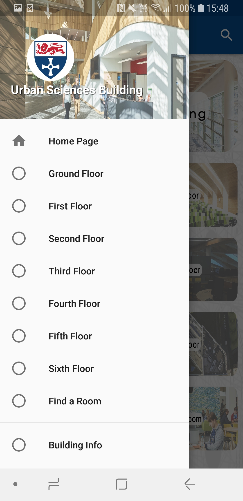

Welcome!
Welcome to the webpage of the premiere Urban Sciences Building tour app.
This app is designed for students, prospective students and anyone interested in the Urban Sciences Building!
With helpful navigation features and a built in tour guide, this app has everything you need to navigate the Urban Sciences Building
Features
The app has many different features that you can use to navigate the Urban Sciences Building. Here's a quick summary of what you can do:
Use search features to get directions to individual rooms
Find your tutor with a map highlighting their room
Find out about the building with a dedicated tour guide
User Guide
Welcome to the User Guide! Here we'll give you a quick guide on how to get started with the app, doing things like searching for a room and navigating the menus.
To start, you'll be seeing the home screen. Click on any of the buttons to go to the page for the floor it corresponds to, or click the magnifying glass in the top right of the screen to search for a specific room. You can also pull out the navigation tray by clicking the top left button or swiping from the left edge of your screen to the right, this allows you to select a floor from a drop-down list, and you can also search for a room here!
From here, you can find a room through the search or through the menu for the floor you have selected. After selecting the room you want, a map screen will pop up showing directions to the room from a landmark on the floor such as the stairs or the lifts. You can use this to navigate to the room you want to go to. You can see an example of the map below!
Downloads
Download links for the app can be found on the Google Play store and from this link: (there's gonna be a link here)
Update Log
Version 1.0.0: Released the app in its first iteration. Features include:
- Searching for rooms within the USB, including searching for tutors by name and room number, including maps.
- A navigation drawer that allows you to select a floor and look at the rooms on any floor the user selects.
- A section detailing information about the building, including a menu of the cafe on the ground floor.
- An open day page which gives the user a small tour of the building, intended for use by prospective students.